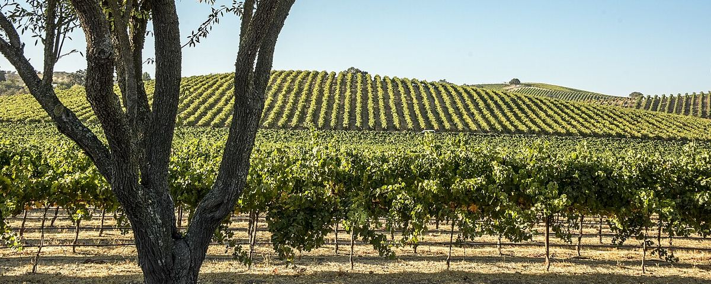
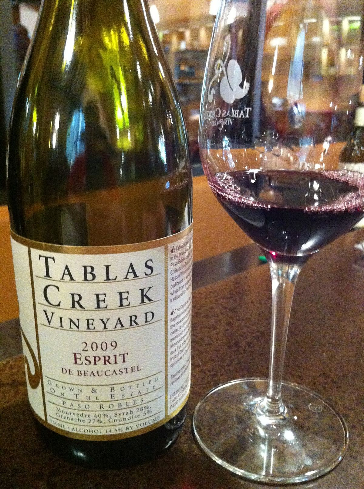

WHITE
Home › United States › Paso Robles
AVAPaso Robles
A large AVA on California’s Central Coast, halfway between San Francisco and Los Angeles, known for its Zinfandel, its blends of Rhône varieties and its Cabernet Sauvignon.

History
The Paso Robles area, in San Luis Obispo County, has a long tradition of farming and ranching, and vines have been grown there since the nineteenth century. In the early twentieth century European immigrants planted Zinfandel vineyards in the western hills, and some of those old vines survive. For decades the region was mainly an area of large farms, but from the 1970s and 1980s numerous family wineries appeared. The Paso Robles AVA was recognised in 1983. In 1989 the Perrin family of Château de Beaucastel and the importer Robert Haas founded Tablas Creek, which imported plant material from the Rhône and helped turn the region into a focus for Rhône varieties in the United States, along with the movement of producers known as the Rhône Rangers.
Climate and soils
Paso Robles lies east of the Santa Lucia Range, which separates it from the Pacific. The climate is hot and dry in summer, but with one of the widest swings between day and night temperatures in California: after hot days, cool marine air flows in during the afternoon through gaps such as the Templeton Gap and brings night-time temperatures down sharply, which helps the grapes retain acidity. The west, closer to the sea, is cooler and wetter; the flatter east is warmer. The western hills are known for their calcareous soils, rare in California, while alluvial and sandy soils predominate in the east.
Sub-regions
Given its size and diversity, eleven AVAs were recognised within Paso Robles in 2014, among them Adelaida District, Willow Creek District, Templeton Gap District, Paso Robles Estrella District, El Pomar District and Creston District. The division makes it easier to distinguish the cool, calcareous western areas from the warmer eastern ones.
Styles
Zinfandel remains a hallmark, with ripe, spicy reds. Rhône varieties such as Syrah, Grenache and Mourvèdre, and whites such as Roussanne, Marsanne, Viognier and Grenache Blanc, are made on their own or in blends. Cabernet Sauvignon also covers a large area, especially in the east, and there is no shortage of free-form blends that combine varieties of different origins. Because the AVA imposes no rules on grape varieties, this freedom of blending has become one of the region’s distinguishing features.
Wines · Paso Robles
RED
